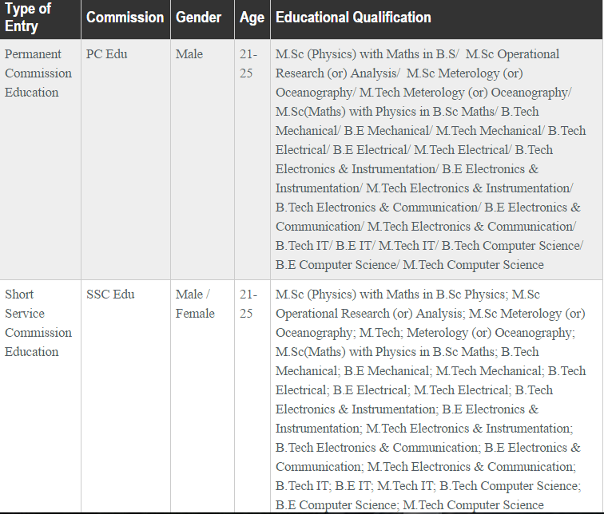

| INDIAN | DEFENCE | SERVICES |
Education officers provide support towards education, training and professional development of Naval personnel. They impart instructions in various Indian Naval Training Establishments including the prestigious Indian Naval Academy at Ezhimala, Kerala. Education Officers are engaged in teaching science, technical and service subjects to naval cadets undergoing B Tech training at the academy. Education Officers also impart instructions \training to officers during their ab-initio and specialisation courses at Technical Training Establishments like INS Valsura & Shivaji.
In addition, Education Officers provide coaching and guidance to sailors for their career progression in service as well as to enhance their resettlement opportunities by facilitating pursuance of various higher education courses. Education Officers are also responsible for conducting various in-service examinations for officers and sailors in online and offline modes at pan-India level using latest technology.
In order to meet the educational, professional and recreational needs of naval personnel, a large number of Naval Reference Libraries have been set up both onboard naval ships and at various naval establishments. Education Officers are responsible for setting up, functioning and introduction of latest techniques & technologies in these libraries.
One of the unique and important tasks of Education Officers is implementation of provisions of the Official Languages Act, 1963 and Official Languages Rules 1976 on the progressive use of Hindi in official work and monitoring of such progress.
Education Officers also provide meteorology\oceanography service support for maritime operations in three dimensions. Selected Education Officers in senior ranks are also deputed as Principals and Vice Principals to various Sainik Schools across India. Some of the Education Officers are deputed for MTech courses in various IITs\NITs. Education Officers also undergo a range of specialist courses including Anti-Submarine Warfare, Naval Communication, Gunnery, hydrographic, navigation & Direction, Meteorology and oceanography.
You can join the Education Branch of Indian Navy in following ways:-
|  |